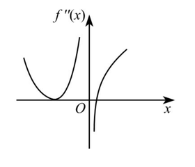

-
(21) (本题满分 12 分)
设函数 $f\left( x \right)$ 在区间 $\left( a, b \right)$ 内可导，证明：导函数 $f^{\prime}\left( x \right)$ 在 $\left( a, b \right)$ 内严格单调递增的充分必要条件是：对 $\left( a, b \right)$ 内任意的 $x_{1}$，$x_{2}$，$x_{3}$，当 $x_{1} < x_{2} < x_{3}$ 时，有 $\frac{f\left( x_{2} \right) - f\left( x_{1} \right)}{x_{2} - x_{1}} < \frac{f\left( x_{3} \right) - f\left( x_{2} \right)}{x_{3} - x_{2}}$.
高等数学
凹凸性与拐点
8道完整真题 · 年份从新到旧 · 同年按原题号排列
凹凸判定、拐点、弦切线关系及凸性等价条件
2025年
2022年
-
(21) (本题满分 12 分)
设函数 $f\left( x \right)$ 在 $\left( -\infty,+\infty \right)$ 上有二阶连续导数，证明：
$f^{\prime\prime}\left( x \right) \ge 0$ 的充分必要条件是对任意不同的实数 $a,b$，都有 $f\left( \frac{a+b}{2} \right) \le \frac{1}{b-a}\int_{a}^{b} f\left( x \right) \mathrm{~d}x$ 成立.
2021年
-
(18) (本题满分 12 分)
已知 $\displaystyle f(x)=\frac{x|x|}{1+x},$ 求 $f(x)$ 的凹凸性及渐近线。
2019年
-
(2) 函数 $y=x\sin x+2\cos x\left(0<x<2\pi\right)$ 的拐点为
2018年
-
(4) 设函数 $f(x)$ 在 $[0,1]$ 上二阶可导，且 $\displaystyle \int_0^1 f(x)\,\mathrm{d}x=0,$ 则 $\left(\ \right)$
2017年
-
(2) 设二阶可导函数 $f(x)$ 满足 $\displaystyle f(1)=f(-1)=1,\qquad f(0)=-1,\qquad f''(x)>0,$ 则（ ）
2015年
-
(4) 设函数 $f\left(x\right)$ 在 $\left(-\infty,+\infty\right)$ 内连续，其中二阶导数 $f^{\prime\prime}\left(x\right)$ 的图形如图所示，则曲线 $y=f\left(x\right)$ 的拐点的个数为（ ）

2014年
-
(3) 设函数 $f\left(x\right)$ 具有二阶导数，$g\left(x\right)=f\left(0\right)\left(1-x\right)+f\left(1\right)x$，则在 $\left[0,1\right]$ 上（ ）